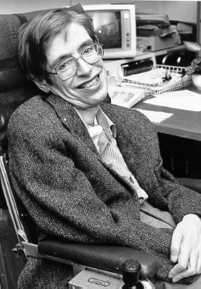

Early Life
Stephen William Hawking (8 January 1942 – 14 March 2018) was an English theoretical astrophysicist, cosmologist, and author who was director of research at the Centre for Theoretical Cosmology at the University of Cambridge. Between 1979 and 2009, he was the Lucasian Professor of Mathematics at Cambridge, widely viewed as one of the most prestigious academic posts in the world.
Hawking was born in Oxford into a family of physicians. In 1959, at the age of 17, he began his university education at University College, Oxford, where he received a first-class BA degree in physics. In 1962, he began his graduate work at Trinity Hall, Cambridge, where, in 1966, he obtained his PhD in applied mathematics and theoretical physics, specialising in general relativity and cosmology. In 1963, at age 21, Hawking was diagnosed with an early-onset slow-progressing form of motor neurone disease that gradually, over decades, paralysed him. After the loss of his speech, he communicated through a speech-generating device, initially through use of a handheld switch, and eventually by using a single cheek muscle.
Education
He obtained his Ph.D. in applied mathematics and theoretical physics, specializing in general relativity and cosmology.
Books
- A Brief History of Time
- The Universe in a Nutshell
- My Brief History
Use the form below to contact Stephen Hawking.
Contact
Stephen Hawking
me@stephen_hawking.info
Phone: 920-465-0000